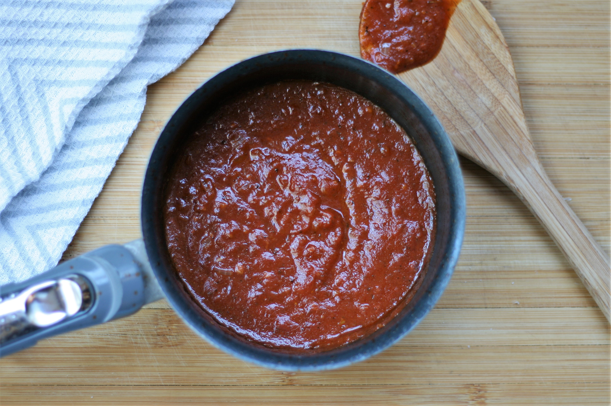

Pizza sauce

You can make this quick pizza sauce while your crust is baking.
This makes about enough sauce for 1 pizza.
- 2 teaspoons olive oil
- ¼ cup onion, diced
- 1 clove garlic, diced, or more to taste
- 1 teaspoon Italian seasoning, or to taste
- 1 teaspoon Italian seasoning, or to taste
- 1 splash red wine (Optional)
- ¼ cup grated Parmesan cheese
- 1 (8 ounce) can tomato sauce
-
Heat olive oil in a small pot over medium-high heat. Saute onion, garlic, Italian seasoning, and red pepper flakes in the hot oil until onions start to soften, about 5 minutes. Add a splash of red wine; stir for a few seconds. Add tomato sauce and stir.
-
Reduce heat to low and let simmer for 10 minutes.